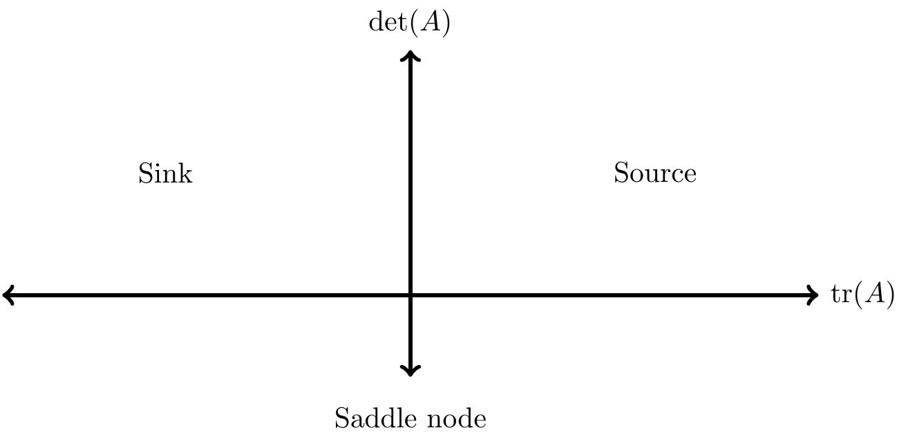
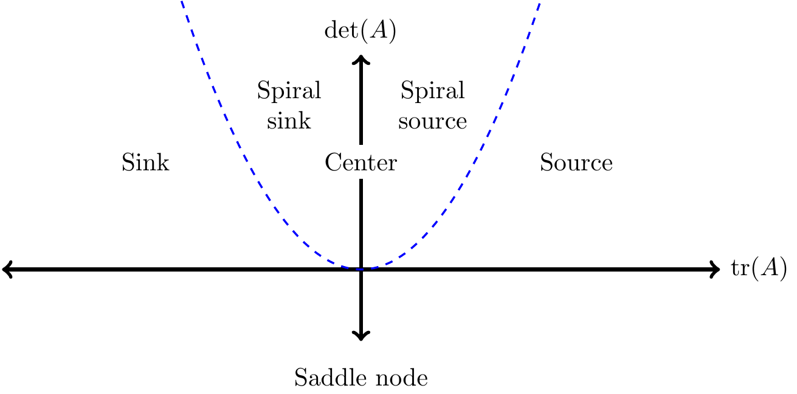

19 Qualitative Stability Analysis
Chapter 18 introduced eigenvalues in order to classify equilibrium solutions for a linear system of differential equations. However let’s face an ugly truth: determining eigenvalues via the characteristic polynomial isn’t easy. Even with a two-dimensional system of equations you may resort to using the quadratic formula. Here’s the good news: this chapter will develop other tools that can circumvent finding roots of a polynomial. In order to do that, we will need to understand some general relationships about the characteristic polynomial for a two-dimensional system of linear differential equations. Let’s get started!
19.1 The characteristic polynomial (again)
Consider the following two-dimensional linear system, where \(a\), \(b\), \(c\), and \(d\) can be any number:
\[ \begin{pmatrix} x' \\ y' \end{pmatrix} = \begin{pmatrix} ax+by \\ cx+dy \end{pmatrix} = \begin{pmatrix} a & b \\ c & d \end{pmatrix} \begin{pmatrix} x \\ y \end{pmatrix} \]
Recall that eigenvalues are found by solving \(\displaystyle \det (A - \lambda I ) =0\); \(\displaystyle \det (A - \lambda I )\) is computed in Equation 19.1.
\[ \det \begin{pmatrix} a - \lambda & b \\ c & d-\lambda \end{pmatrix} = (a-\lambda)(d-\lambda) - bc \tag{19.1}\]
If we multiply out Equation 19.1 we obtain the characteristic polynomial:
\[ f(\lambda)=\lambda^{2} - (a+d) \lambda + ad - bc \tag{19.2}\]
Notice how the terms of Equation 19.2 can be expressed as functions of the entries of the matrix \(A\) which are (\(a\), \(b\), \(c\), \(d\)). In fact, in linear algebra the term \(a+d\) is the sum of the diagonal entries, also known as the trace of a matrix, denoted as \(\mbox{tr}(A)\). And you may recognize that \(ad-bc\) is the same as \(\det(A)\). So our characteristic polynomial can be rewritten as solving Equation 19.4:
\[ f(\lambda)=\lambda^{2} - \mbox{tr}(A)\lambda + \det(A) \tag{19.3}\]
Example 19.1 Determine the characteristic polynomial \(f(\lambda)\) for the system \(\vec{x}'=Ax\) where \(\displaystyle A= \begin{pmatrix} -1 & 1 \\ 0 & 3 \end{pmatrix}\). Solve for the eigenvalues to classify the stability of the equilibrium solution.
Solution 19.1. We can see that \(\det(A)= -1(3) - 0(1) = -3\) and tr\((A)=2\), so our characteristic equation is \(\lambda^{2}-2\lambda -3\). If we solve \(\lambda^{2}-2\lambda -3=0\) we have \((\lambda-3)(\lambda+1)=0\), so our eigenvalues are \(\lambda=3\) and \(\lambda=-1\). Since one eigenvalue is positive and the other one is negative, the equilibrium solution is a saddle node.
As shown in Example 19.1, Equation 19.3 may be a computationally easier way to determine eigenvalues. Here is another way to think about eigenvalues. Let’s say we have two eigenvalues \(\lambda_{1}\) and \(\lambda_{2}\), so \(f(\lambda_{1})=0\) and \(f(\lambda_{2})=0\). However we can also examine Equation 19.4 in terms of the roots of \(f(\lambda)\), denoted as \(\lambda_{1}\) and \(\lambda_{2}\). We make no assumptions about whether \(\lambda_{1}\) or \(\lambda_{2}\) are real, imaginary, or equal in value. However, since they solve the equation \(f(\lambda)=0\), this also means that \((\lambda-\lambda_{1})(\lambda-\lambda_{2})=0\). If we multiply out this equation we have \(\lambda^{2}-(\lambda_{1}+\lambda_{2}) \lambda + \lambda_{1} \lambda_{2}=0\). If we compare this equation with Equation 19.3 we have:
\[ \begin{split} f(\lambda) &=\lambda^{2}-(\lambda_{1}+\lambda_{2}) \lambda + \lambda_{1} \lambda_{2} \\ &= \lambda^{2} - \mbox{tr}(A)\lambda + \det(A) \end{split} \tag{19.4}\]
Equation 19.4 allows us to identify that \(\mbox{tr}(A) = \lambda_{1}+\lambda_{2}\) and \(\det(A) = \lambda_{1} \lambda_{2}\), or the trace of \(A\) is the sum of the two eigenvaules and the determinant of \(A\) is the product of the eigenvalues. Let’s explore this a little more.
19.2 Stability with the trace and determinant
The equality in Equation 19.4 uncovers some neat relationships - in particular tr\((A)=(\lambda_{1}+\lambda_{2})\) and \(\det(A)=\lambda_{1}+\lambda_{2}\). Table 19.1 synthesizes all these relationships to provide an alternative pathway to understand stability of an equilibrium solution with the trace and determinant:
| Sign of \(\lambda_{1}\) | Sign of \(\lambda_{2}\) | Tendency of equilibrium solution | Sign of tr\((A)=\lambda_{1}+\lambda_{2}\) | Sign of \(\det(A)=\lambda_{1} \cdot \lambda_{2}\) |
|---|---|---|---|---|
| Positive | Positive | Source | Positive | Positive |
| Negative | Negative | Sink | Negative | Positive |
| Positive | Negative | Saddle | ? | Negative |
| Negative | Positive | Saddle | ? | Negative |
For the moment we will only consider real non-zero values of the eigenvalues - more specialized cases will occur later. But examining the above table carefully:
- If \(\det(A)\) is negative, then the equilibrium solution is a saddle.
- If \(\det(A)\) is positive and tr\((A)\) is negative, then the equilibrium solution is a sink.
- If \(\det(A)\) and tr\((A)\) are both positive, then the equilibrium solution is a source.
Example 19.2 Use the trace and determinant relationships to classify the stability of the equilibrium solution for the linear system \(\vec{x}'=A\vec{x}\) where \(\displaystyle A= \begin{pmatrix} -1 & 1 \\ 0 & 3 \end{pmatrix}\).
Solution 19.2. We can see that \(\det(A)= -1(3) - 0(1) = -3\) and tr\((A)=2\). Since the determinant is negative, the equilibrium solution must be a saddle node.
Knowing the relationships between the trace and determinant for a two-dimensional system of equations is a pretty quick and easy way to investigate stability of equilibrium solutions!
Another way to graphically represent the stability of solutions is with the trace-determinant plane (shown in Figure 19.1), with tr\((A)\) on the horizontal axis and det\((A)\) on the vertical axis:
While Figure 19.1 only determines if an equilibrium solution is a sink, source, or saddle node, it can be extended further to include spiral sinks and spiral nodes. Here’s how: first we will apply the quadratic formula to Equation 19.4 to solve directly for the eigenvalues as a function of the trace and determinant:
\[ \lambda_{1,2}= \frac{\mbox{tr}(A)}{2} \pm \frac{\sqrt{ (\mbox{tr}(A))^2-4 \det(A)}}{2} \tag{19.5}\]
While Equation 19.5 seems like a more complicated expression, it can be shown to be consistent with our above work. Imaginary eigenvalues can be a spiral source or sink depending on their location in the trace-determinant plane (Figure 19.2). The dividing curve is setting the discriminant of Equation 19.5 to 0, which yields the quadratic equation \(\displaystyle \det(A) = \frac{\mbox{tr}(A))^2}{4}\) (blue dashed curve in Figure 19.2). When \(\displaystyle 0 < \det(A)<\frac{\mbox{tr}(A))^2}{4}\), then the solution is a sink or a source depending on the sign of tr\((A)\). Likewise, when \(\displaystyle 0 < \frac{\mbox{tr}(A))^2}{4} <\det(A)\), then the solution is a spiral sink or a spiral source depending on the sign of tr\((A)\).

The one case that we haven’t considered in our stability table is a center equilibrium. For this equilibrium solution, the eigenvalues (\(\lambda_{1,2}\)) equal \(\pm \beta i\). Additionally, a center equilibrium occurs when the value of tr\((A)\) is exactly zero and \(\det(A)\) is positive (Exercise 19.10).
Example 19.3 Use the trace and determinant relationships to classify the stability of the equilibrium solution for the linear system of differential equations:
\[ \begin{pmatrix} x' \\ y' \end{pmatrix} = \begin{pmatrix} -x+y \\ x-4y \end{pmatrix} \]
Solution 19.3. The matrix for this system of differential equations is \(\displaystyle A= \begin{pmatrix} -1& 1 \\ 1 & -4 \end{pmatrix}\). This means that tr\((A)=-5\) and \(\det(A)=3\). Since (tr\((A)\))\(^{2}/4=25/4\), which is greater than \(\det(A)\), this equilibrium solution is a sink. You can verify on your own that the equilibrium solution is a sink by generating this system’s phase plane.
As you can see, the trace-determinant plane (Figure 19.2) is a quick way to analyze stability of an equilibrium solution that does not require heavy algebraic analysis.
19.3 A workflow for stability analysis
Chapters 15 to this one have covered a lot of ground, so perhaps it is prudent to summarize a workflow for stability analysis for a system of differential equations \(\displaystyle \frac{d}{dt} \vec{x} = f(\vec{x},\vec{\alpha})\), where \(\vec{\alpha}\) is a vector of parameters:
- Determine nullclines by solving \(f(\vec{x},\vec{\alpha})=0\). Equilibrium solutions occur where all the distinct nullclines intersect.
- Construct the Jacobian matrix for each equilibrium solution.
- Analyze stability of the equilbrium solution by computing eigenvalues of the Jacobian matrix (or use the methods in this chapter).
You can bypass the first few steps if the system is already linear (\(\displaystyle \frac{d}{dt} \vec{x} = A \vec{x}\)). You can summarize this workflow with Nullclines \(\rightarrow\) Jacobian \(\rightarrow\) Eigenvalues. There are a lot of separate pieces to analyze stability of a differential equation - but being systematic and careful with your approach helps.
19.4 Stability for higher-order systems of differential equations.
The trace-determinant plane is a really useful approach to analyze stability of an equilibrium solution. However, one huge caveat is that the methods outlined in this chapter only apply with a two-dimensional system of differential equations.
The stability of an equilibrium solution depends on the signs of the eigenvalues, which are also a function of roots of the characteristic polynomial \(f(\lambda)\). For higher-order systems the Routh-Hurwitz stability criterion can help determine stability, but computational complexity increases with higher-order systems. Another apporach with several differential equations may be to apply equilibrium analyses to reduce the system to two differential equations. (See Keener and Sneyd (2009) for many examples related to human physiology.)
In the final analysis, there are deep connections between eigenvalues and the structure of the matrix \(A\) (whether or not it arises from a linear system of differential equations or a Jacobian matrix). Examining stability of an equilibrium solution as it depends on an unspecified parameter is called a bifuraction analysis, which we will study in Chapter 20). There is more to this story, so let’s forge ahead!
19.5 Exercises
Exercise 19.1 Compute the trace and determinant for each of these systems of differential equations. Use the trace-determinant condition to classify the stability of the equilibrium solutions. Verify your stability results are consistent when analyzing stability by calculating the eigenvalues.
- \(\displaystyle x' = 2x-6y, \; y' = x-2y\)
- \(\displaystyle x' = 9x-22y, \; y' = 3x-7y\)
- \(\displaystyle x' = 4x - 2y, \; y' = 2x - 2y\)
- \(\displaystyle x'= 4x-15y, \; y'=2x-7y\)
- \(\displaystyle x' = 3x-18y, \; y' = x-5y\)
- \(\displaystyle x' = 5x-12y, \; y' = x-2y\)
Exercise 19.2 Consider the linear system of differential equations:
\[ \begin{split} x'&=ax-y \\ y' &= -x+ ay \end{split} \]
Apply the relationships between the trace and determinant to classify the stability of the equilibrium solution for different values of \(a\). Be sure to include cases where the system will be a spiral source or sink.
Exercise 19.3 Consider the following nonlinear system:
\[ \begin{split} x'&=y-x \\ y' &= -y + \frac{5x^{2}}{4+x^{2}} \end{split} \]
- In Chapter 16 you verified that \((x,y)=(1,1)\) is an equilibrium solution for this system. What is the Jacobian matrix for this equilibrium solution?
- What is tr\((J)\) and det\((J)\) for this equilibrium solution?
- Evaluate the stability of the equilibrium solution using relationships between the trace and determinant. You may use a graph to plot \(\det(J)\).
Exercise 19.4 (Inspired by Keener and Sneyd (2009)) Consider the following model of a neuron, with the two variables \(v\) and \(w\):
\[ \begin{split} x' &= y-x^{3} +3x^{2} \\ y' &= 1 - 5x^{2} - y \\ \end{split} \tag{19.6}\]
- Solve each of the nullclines as a function of \(y\).
- Using desmos or some other graphing utility, determine the equilibrium solutions.
- Determine the Jacobian matrix for each of the equilibrium solutions.
- Apply the trace-determinant conditions to determine stability of the equilibrium solutions
Exercise 19.5 (Inspired by Logan and Wolesensky (2009)) Consider the following predator-prey model, where the carrying capacity of the predator (\(y\)) depends on the prey population (\(x\)):
\[ \begin{split} x' &= \frac{2}{3} x \cdot \left(1- \frac{x}{4} \right) - \frac{1}{6} xy \\ y' &= 0.5y \cdot \left(1 - \frac{y}{x} \right) \end{split} \]
- There are three equilibrium solutions for this differential equation. What are they? Hint: first determine where \(y'=0\) and then substitute your solutions into \(x'=0\).
- For what values of \(x\) and \(y\) is the function \(g(x,y)= 0.5y \cdot \left(1 - \frac{y}{x} \right)\) not defined? How might that affect interpretation of the trivial (\((x,y)=(0,0)\)) equilibrium solution?
- Visualize the phase plane for this system of differential equations.
- Compute the Jacobian matrix for all of the non-trivial equilibrium solutions (i.e. not \((x,y)=(0,0)\)).
- Use the trace-determinant relationships to evaluate the stability of the non-trivial equilibrium solutions. Is the trace-determinant analysis consistent with your phase plane?
Exercise 19.6 (Inspired by Logan and Wolesensky (2009)) Let \(C\) be the amount of carbon in a forest ecosystem, with \(P\) as the rate of increase due to photosynthesis. Herbivores \(H\) consume carbon on the following predator-prey model:
\[ \begin{split} \frac{dC}{dt}&=P - aC - bHC \\ \frac{dH}{dt} &= ebHC-dH \end{split} \tag{19.7}\]
The parameters \(a\) and \(d\) represent the removal of carbon and herbivores from this system, and \(b\) the consumption of carbon by the herbivores at some efficiency \(e\). All parameters are greater than zero. Use this information to answer the following questions:
- Construct the general Jacobian matrix for this system of differential equations.
- What are the \(H\) nullclines for this system of differential equations? Your nullclines will be a function of the parameters.
- Use the \(H\) nullclines to determine the two equilibrium solutions for Equation 19.7. Under what conditions will the equilibrium solutions be positive?
- Evaluate tr(\(J\)) and det(\(J\)) at each of your equilibrium solutions. What do you think the stability of the equilibrium solutions would be?
Exercise 19.7 (Inspired by Pastor (2008)) The amount of nutrients (such as carbon) in soil organic matter is represented by \(N\), whereas the amount of inorganic nutrients in soil is represented by \(I\). A system of differential equations that describes the turnover of inorganic and organic nutrients is the following:
\[ \begin{split} \frac{dN}{dt} &= L + kdI - \mu N I - \delta N \\ \frac{dI}{dt} &= \mu N I - k d I - \delta I , \end{split} \]
- Construct the general Jacobian matrix for this system of differential equations.
- An equilibrium solution to this system of differential equations is \(\displaystyle N = \frac{L}{\delta}, \; I = 0\). Determine tr\((J)\) and det(\(J\)) for this equilibrium solution.
- Express conditions on the parameter \(\mu\) (as a function of the other parameters) that determine when this equilibrium solution a saddle node (you may assume that \(\delta>0\) and \(\mu > 0\))? If \(\mu\) represents the rate conversion of nutrients to inorganic matter, and \(\delta\) is the removal of nutrients from the system, what does this condition mean in a biological sense?
Exercise 19.8 Apply the quadratic formula to \(\lambda^{2} - \mbox{tr}(A)\lambda + \det(A)=0\) to obtain Equation 19.5.
Exercise 19.9 Assume that you have two complex conjugate eigenvalues: \(\lambda_{1} = a + bi\) and \(\lambda_{2} = a - bi\).
- What is an expression for \(\lambda_{1} + \lambda_{2}\)?
- What is an expression for \(\lambda_{1} \cdot \lambda_{2}\)?
- Explain why your answers from the previous two questions mean that tr\((A)=2a\) and \(\det(A)=a^{2}+b^{2}\).
- Create a linear two-dimensional system of differential equations where the equilibrium solution at the origin is a spiral sink. Show your system and the corresponding phase plane.
Exercise 19.10 Consider a two-dimensional system where tr\((A)=0\) and det\((A)>0\).
- Given those conditions, explain why \(\lambda_{1} + \lambda_{2}=0\) and \(\lambda_{1} \cdot \lambda_{2}>0\).
- What does \(\lambda_{1} + \lambda_{2}=0\) tell you about the relationship between \(\lambda_{1}\) and \(\lambda_{2}\)?
- What does \(\lambda_{1} \cdot \lambda_{2}>0\) tell you about the relationship between \(\lambda_{1}\) and \(\lambda_{2}\)?
- Look back to your previous two responses. First explain why \(\lambda_{1}\) and \(\lambda_{2}\) must be imaginary eigenvalues (in other words, not real values). Then explain why \(\lambda_{1,2}= \pm bi\).
- Given these constraints, what would the phase plane for this system be?
- Create a linear two-dimensional system where tr\((A)=0\) and det\((A)>0\). Show your system and the phase plane.
Keener, James, and James Sneyd, eds. 2009. Mathematical Physiology. New York, NY: Springer New York. https://doi.org/10.1007/978-0-387-75847-3.
Logan, J. David, and William Wolesensky. 2009. Mathematical Methods in Biology. 1st ed. Hoboken, N.J: Wiley.
Pastor, John. 2008. Mathematical Ecology of Populations and Ecosystems. West Sussex, United Kingdom: Wiley-Blackwell.